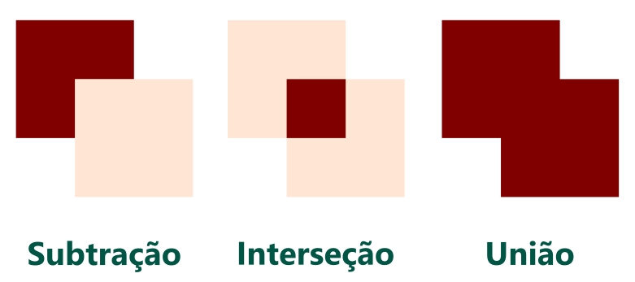
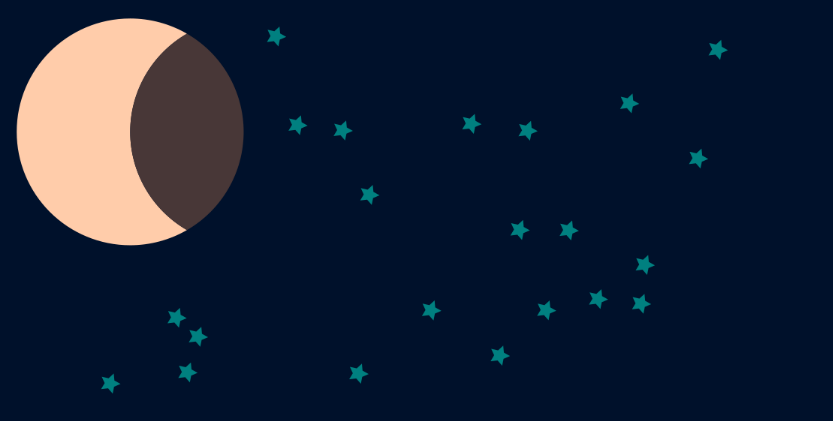
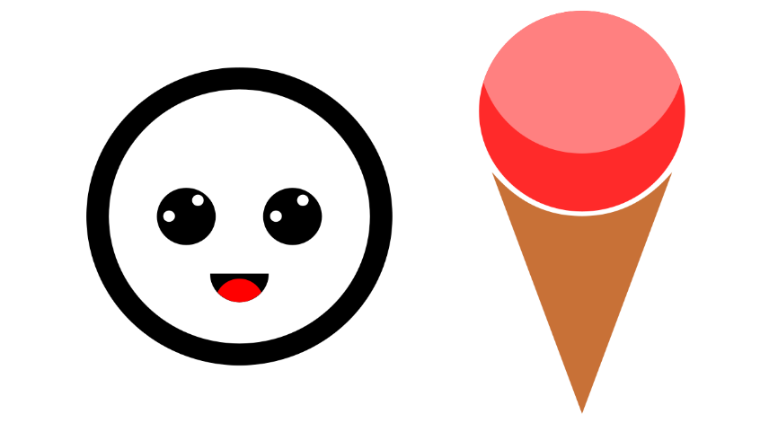

Operações booleanas
Apesar de ter um nome complicado (simplificado em alguns softwares), consiste simplesmente em subtração, intersecção e união de objetos. Observe a ilustração abaixo:
Subtração: É mantida apenas a parte do objeto de baixo que não estava sobreposta pelo objeto de cima.
Intersecção: É mantida apenas a sobreposição dos objetos.
União: Um novo caminho é criado a partir dos dois objetos.
Em ambos os casos o resultado da operação é apenas um novo objeto. Qualquer forma primitiva é convertida em caminho. Alguns softwares podem permitir configurar para que o objeto a ser removido seja mantido, ou como no caso do CorelDraw, o objeto sempre é mantido, alguns softwares podem ainda possibilitar outros tipos de operações booleanas.
Verifique a lista de teclas de atalho no início deste capítulo para conferir os atalhos para as operações booleanas do Inkscape.
O termo “operação booleana” é adequadamente utilizado e vem da álgebra booleana. Alguns softwares podem utilizar sua própria nomenclatura para essas ferramentas.
Em nosso próximo tutorial rápido desenharemos uma lua utilizando as operações de intersecção e subtração, e aprenderemos também a trabalhar com o spray de objetos para desenhar as estrelas no céu. Observe o desenho abaixo:
Desenhando o fundo
1. Clique na ferramenta retângulo e arraste na tela para desenhar.
2. Defina a largura como 300 e a altura como 150.
3. Escolha uma cor azul-escuro.
4. Se necessário retire a cor do contorno clicando com o botão direito na primeira opção da Paleta de Cores e selecione Aplicar ao contorno.
Você pode navegar pela paleta de cores utilizando a barra de rolagem que se encontra logo abaixo dela. Ou pelas setas para cima e para baixo ao lado da paleta, dependendo da versão utilizada.
Desenhando a lua
1. Clique na ferramenta elipse.
2. Com a tecla control pressionada, clique e arraste para desenhar o círculo.
3. Pressione S para pegar a ferramenta seleção.
4. Defina a largura e a altura como 80.
5. Selecione uma cor parecida com a da imagem acima.
6. Com o círculo selecionado, pressione Ctrl+D para duplicá-lo.
7. Não é necessário, mas se quiser se certificar de que o círculo foi duplicado arraste a cópia para fora depois desfaça. Esta cópia manteremos no local.
8. Faça uma segunda cópia e arraste para o lado mantendo a tecla control pressionada, posicione de forma que as metades dos círculos se sobreponham.
9. Agora duplique também o círculo que você arrastou.
10. A essa altura devemos ter dois pares de círculos, em cada par os objetos estão exatamente um sobre o outro.
11. Selecione um círculo da direita e um da esquerda e pressione Ctrl+* para criar uma intersecção.
12. Selecione um círculo da direita e um da esquerda e pressione Ctrl+- para subtrair.
13. Agora devemos ter dois objetos diferentes formando a lua e a sombra da terra, selecione-os para verificar.
14. Aplique uma cor diferente para a sombra da terra.
15. Certifique-se de que está como na imagem.
16. Selecione os dois objetos e pressione Ctrl+G para agrupá-los, em seguida posicione no retângulo do fundo.
Desenhando as estrelas
1. Clique na ferramenta polígono.
2. Na barra de propriedades marque como Estrela e defina a quantidade de lados como 5.
3. Desenhe uma pequena estrela sobre o retângulo e escolha uma cor azul.
4. Com a estrela selecionada com a ferramenta seleção, clique na ferramenta Spray na Barra de Ferramentas, defina a largura como 50 e a quantidade como 3.
5. Marque a opção Pulverizar objetos como um único caminho, isso facilitará selecionar todas as estrelas depois, caso seja necessário.
6. Em seguida clique e arraste sobre o retângulo para desenhar outras estrelas.
Salve seu arquivo.
Está finalizado nosso tutorial, selecione e exporte o desenho para sua pasta com o nome Céu Estrelado.png. Se tiver dificuldades com esse tutorial solicite o auxílio de seu instrutor.

Neste exercício temos dois desenhos bem simples para você praticar mais subtração e intersecção de objetos. Darei apenas duas dicas para facilitar seu trabalho: no desenho do sorvete, a casquinha pode ser feita com um polígono com 3 lados, e no desenho da carinha os olhos estão centralizados exatamente no meio do círculo, o restante é tudo feito a partir de subtrações.
Ao finalizar o trabalho salve o arquivo e exporte cada desenho como .png para sua pasta.